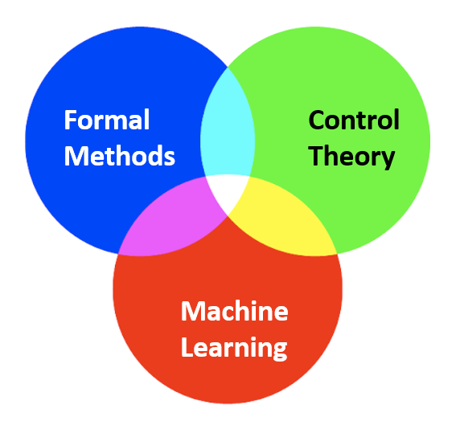

Research: Safe, Interpretable, and Intelligent Systems Lab
|

|
Intelligent systems are widely used in our industrial and economic world, such as intelligent transportation systems and smart factories, which have brought a lot of convenience to our lives, but the design of cyber-physical systems is still a very difficult task and requires more researchers' efforts. The problems to be solved urgently in cyber-physical system design mainly include lack of trustable monitoring tools, lack of safe guarantees and lack of interpretable algorithms. |
Direction I: Monitoring of Cyber-physical Systems with Formal Methods

|
The inherent and increasing complexity of many cyber-physical systems (CPSs) makes it challenging for human users or designers to comprehend and interpret their performance. This issue, without proper attention paid, may lead to unwanted and even catastrophic consequences, particularly with safety-critical CPSs. Formal languages can be used to describe the behavious of CPSs in an interpretable way. However, traditional formal languages cannot deal with noisy environments. Additionally, finding the optimal formal language for CPS is still a challenge due to the sparse reward issue. This research direction tries to find formal languages to describe the behaviours of CPS. The formal language defined is robust to noise, acts as the classifier or prognoiser, and provides interpretabilities for human operators. Moreover, the learned formal lanugae can be applied to other applicaiton, such as CPS design, guiding learning direction in neural networks. Technologies: Formal language generation, machine learning, fault diagnosis. |
Temporal logic inference for fault detection, diagnosis and intepretation
TBD
Temporal logic inference for fault prognosis and useful life prediction
TBD
Human-machine interaction for predictive maintenance with formal languages
TBD
Selected Papers

|
Formal Language Generation for Fault Diagnosis with Spectral Logic via Adversarial TrainingGang Chen, Peng Wei, Huiming Jiang, and Mei Liu IEEE Transactions on Industrial Informatics, 2020 |

|
Frequency-temporal-logic-based Bearing Fault Diagnosis and Fault Interpretation using Bayesian Optimization with Bayesian Neural NetworksGang Chen, Mei Liu, and Jin Chen Mechanical Systems and Signal Processing, 2020 |

|
Temporal-logic-based Semantic Fault Diagnosis with Time-series Data from Industrial Internet of ThingsGang Chen, Mei Liu, and Zhaodan Kong IEEE Transactions on Industrial Electronics, 2020 |
Direction II: Intelligent Systems Design and Control Synthesis with Formal Methods
TBD
Control Synthesis for linear and nonlinear Systems with spectral logic specifications
TBD
Formal language guided control synthesis for stochastic system based on Markov decision process
TBD
Direction III: Machine Learning and Neural Networks Interpretation with Formal Methods
TBD
Reward shaping with formal language for verifiable and safe learning systems
TBD
Network intepretation with formal language
TBD